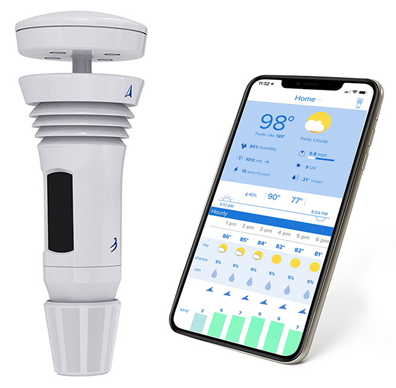

The Tempest Weather System combines state-of-the-art sensors and a sleek, wireless design with WeatherFlow’s proprietary modeling capabilities to seamlessly present validated weather data and improved forecasts. The Tempest API & Developer Platform empowers a growing community of developers to build useful applications and integrations by providing access to enhanced data and forecasts from the Tempest System.
While Tempest-supported apps and integrations offer ample functionality and a wealth of uses, our robust set of self serve developer tools enable even more complex integrations. To learn more about how to work with the API, visit our Getting Started guide.
For uses that go beyond our self-serve developer tools, or to discuss an app or integration that would require access to data from the broader Tempest network, please contact us with a description of your idea - we’d love to hear about it.